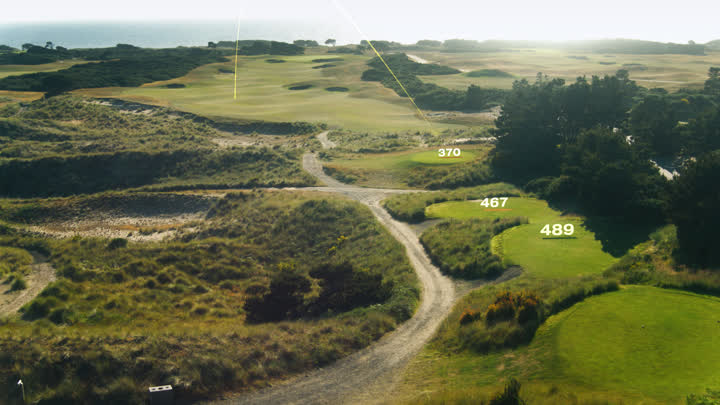

SCROLL TO FLY⌄
Loading hole 3…HOLE 3 · PAR 5 · 489 YARDS
Bandon Dunes
Explore the hole from tee to green. Select a tee color or point at the hole map to preview yardage.
Independent Fairway Flow demo · media & course maps: CoursePreview · pointer distances are estimates, not surveyed yardage.